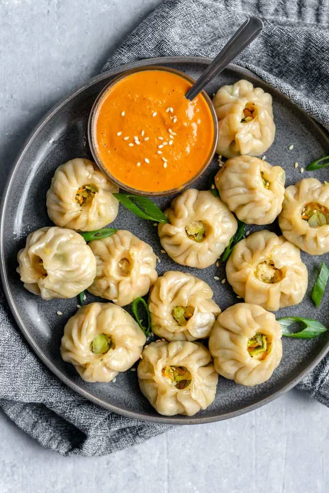

A Nepali favorite
Momos are steamed dumplings and are one of Nepal's most traditional dishes. A thin dough wrapper is filled with a seasoned mixture of ground meat and vegetables, folded by hand, then steamed and served with a spicy tomato-based dipping sauce called achar.
- Serves
- About 4
- Roughly 24 momos, 6 per person as a main. 6–8 people as an appetizer.
- Total time
- 1 hr 15 min
- Hands-on
- About 45 min
- You’ll need
- Equipment list
Ingredients
Dough
Filling
For serving
Dietary notes
Who can and can’t eat this recipe as written:
- Contains gluten. The dough is made with all-purpose wheat flour, so it is not safe for people with celiac disease or a gluten intolerance.
- Contains meat. The chicken filling means it is not vegetarian or vegan.
- Halal / kosher. Only suitable if the chicken is sourced as halal or kosher.
- Onion and garlic. The filling uses both, so it doesn’t fit diets that avoid them (such as Jain or low-FODMAP diets).
- Low-carb / keto. Not a good fit because of the flour wrapper.
- Free of dairy, eggs, and nuts. None of the listed ingredients contain them. Check the achar, since some versions add sesame or peanuts.
Possible swaps: use a gluten-free flour blend for the dough, or replace the chicken with tofu or mixed vegetables for a vegetarian version.
Equipment
- Steamer (a bamboo steamer, a metal steamer insert, or a colander over a pot with a lid)
- Large pot or wok with a tight-fitting lid, for the steaming water
- Large mixing bowl for the dough and another for the filling
- Rolling pin
- Cutting board and knife for chopping the onion, garlic, ginger, and cilantro
- Measuring cups and spoons
- Damp towel or plastic wrap to cover the dough and keep it from drying out
- Cabbage leaves or a light coating of oil to keep the momos from sticking
Instructions
Time breakdown for an experienced cook: about 1 hour 15 minutes total, with about 45 minutes of hands-on work. Make the filling while the dough rests to save time. If your steamer is small and you need to cook two batches, add about 15 minutes.

Dough and filling
- Mix flour, salt, and water into a smooth dough. Cover and rest for 20 minutes. 5 minutes to mix, plus 20 minutes resting
- Combine ground chicken, onion, garlic, ginger, cilantro, cumin, salt, and oil in a bowl to make the filling. 10 minutes, done while the dough rests
Roll and fold
- Roll the dough into small, thin circles. 10–15 minutes
- Place a spoonful of filling in the center of each circle and pleat the edges closed. 20–25 minutes for about 24 momos
Steam
- Arrange momos in a steamer lined with oil or cabbage leaves so they don’t stick. 2–3 minutes, while the water comes to a boil
- Steam for 12–15 minutes, until the wrapper is translucent and the filling is cooked through. 12–15 minutes per batch
Serve
- Serve hot with tomato achar (dipping sauce). For a good one to go with momos, try this Nepali-style tomato achar recipe from Dharma Adventures. It’s a stovetop recipe, so you can make it while the dough rests or while the momos steam.